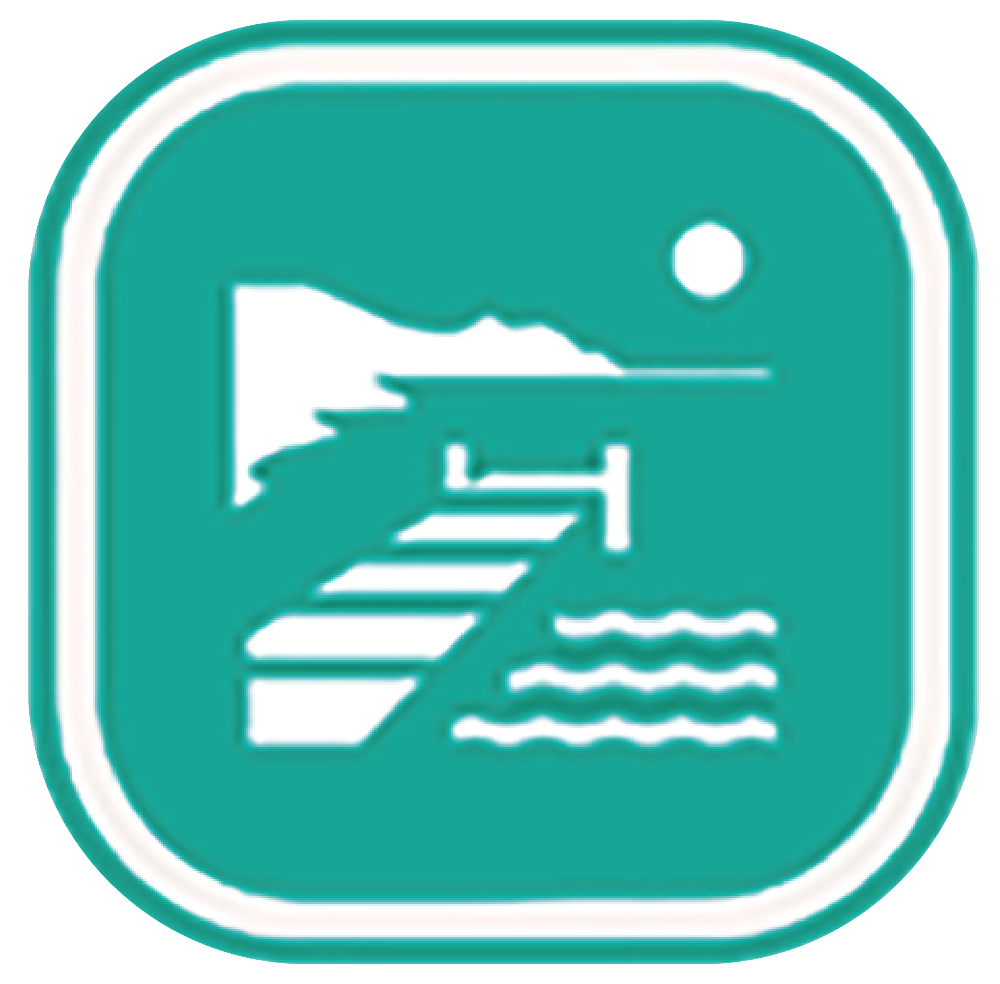

<div class="legend">
  <details open>
    <summary><strong>Simbología</strong></summary>
    <ul>

      <li onclick="zoomTo([18.5376569, -89.9006171])">
        
        Ecoaldea Tanaj
      </li>
    
      <li onclick="zoomTo([18.5106874, -89.4063669])">
        
        Zona Arqueológica Xpuhil
      </li>
    
      <li onclick="zoomTo([18.5068426, -89.4868319])">
        
        Zona Arqueológica Chicanná
      </li>
    
      <li onclick="zoomTo([18.516707, -89.4657862])">
        
        Zona Arqueológica de Becán
      </li>
    
      <li onclick="zoomTo([18.1058665, -89.8102324])">
        
        Zona Arqueológica de Calakmul
      </li>
    
      <li onclick="zoomTo([18.6067251, -89.8461584])">
        
        Zona Arqueológica de Nadzca'an
      </li>
    
      <li onclick="zoomTo([18.5575854, -89.9452691])">
        
        Zona Arqueológica de Balamkú
      </li>
    
      <li onclick="zoomTo([18.61234330920191, -90.73140499093059])">
        
        Estación Centenario
      </li>
    
      <li onclick="zoomTo([18.5314818153254, -89.9038826369206])">
        
        Estación Calakmul
      </li>
    
      <li onclick="zoomTo([18.52647219773993, -89.39660850331184])">
        
        Estación Xpujil
      </li>
    
      <li onclick="zoomTo([18.53921982121233, -89.90268826117062])">
        
        Gasolinera del Bienestar
      </li>
    
      <li onclick="zoomTo([18.5312604963742, -89.90183440961458])">
        
        Guardía Nacional
      </li>
    
      <li onclick="zoomTo([18.11470025105679, -89.80119074112473])">
        
        Estacionamiento Zona Arqueológica Calakmul
      </li>
    
      <li onclick="zoomTo([18.6395458, -90.2804921])">
        
        Laguna de Sylvituc
      </li>
    
      <li onclick="zoomTo([18.3082781, -89.857044])">
        
        Aguada Km 27-Cocodrilo y venados
      </li>
    
      <li onclick="zoomTo([18.3889335, -89.8977838])">
        
        Aguada km 15, Tapires
      </li>
    
      <li onclick="zoomTo([18.2482375, -89.8059097])">
        
        Dormitorio de los monos
      </li>
    
      <li onclick="zoomTo([18.5234222, -89.8238143])">
        
        Cueva de los murciélagos
      </li>
    
    </ul>
  </details>
</div>
